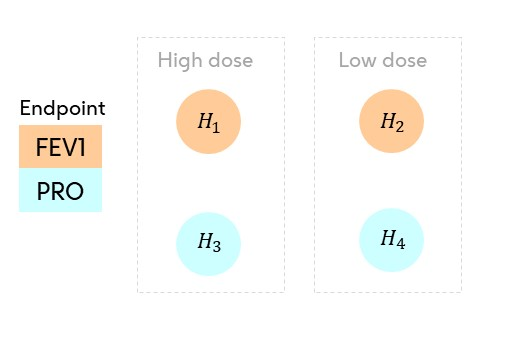
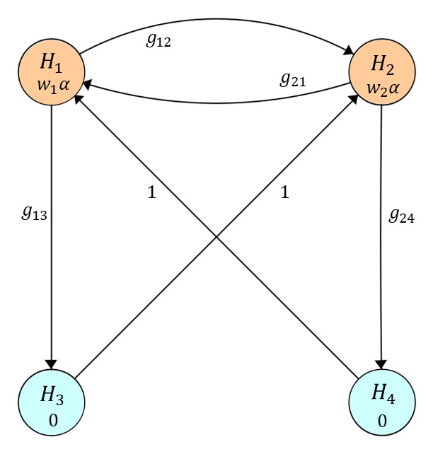
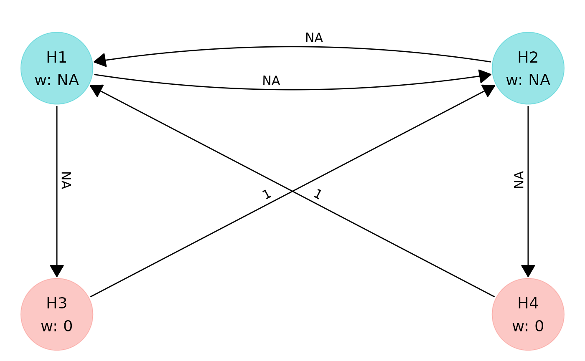

What Does multigrain Do?
The multigrain package is designed to
optimise graph-based multiple testing procedures by identifying the
hypothesis and transition weights that maximise a user-defined
definition of trial success, given an expected distribution of test
statistics.
A graphical test has:
- An -length hypothesis weight vector (), which determines how is initially allocated between hypotheses in the graph.
- A transition matrix () of dimensions which determines how can be recycled from a null hypothesis after it has been rejected to other unrejected hypotheses.
Optimising for different power metrics or trial success criteria will often lead to distinct graphs, i.e., distinct values for the parameters that make up the hypothesis weight vectors (), and the transition matrices ().
Each trial success measure has its own optimal configuration of these
parameters that maximizes the desired success criterion. The
multigrain function
graph_optimise() is the tool that identifies these optimal
parameters, enabling users to find the graph that gives that highest
value for their chosen trial success measure.
Motivating Example
Consider a two-arm parallel confirmatory clinical trial to compare a high and low dose of an investigational treatment in patients with asthma versus placebo.
There are two endpoints included in the multiplicity adjustment:
- a primary endpoint, FEV1;
- a secondary endpoint, a patient-report outcome (PRO).
Thus there are four hypotheses, the primary hypotheses and on FEV1 comparing high and low dose of the investigational treatment against placebo, and the secondary hypotheses and on the PRO endpoint for the high and low dose comparisons against placebo.

The secondary hypothesis for the PRO endpoint will only be tested after the corresponding primary endpoint FEV1 has been rejected for the same dose.
Inputs for optimisation by
multigrain
Optimisation of graphical tests is conducted using the function
graph_optimise() from the
multigrain package.
In order to optimise a graph-based multiple testing procedure, we require three things:
- P-value matrix approximating joint distribution of p-values
- A trial success measure
- Required constraints on a graph
P-value matrix approximating the joint distribution of p-values
graph_optimise() expects a matrix
of raw p-values with dimension
.
Each row is a simulation of p-values from the null hypotheses under the alternative hypothesis that configuration you wish to evaluate.
There are two equivalent ways to provide :
- Supply your own p-value matrix (e.g., from end-to-end trial simulation).
-
Generate
with
simulate_pvalues(), which uses the standard normal-approximation for one-sided test statistics (described next).
From the joint test statistic distribution to p-value matrix
At the design stage it is common to assume the one-sided test statistics are jointly normal:
where:
- are the non-centrality parameters (NCPs) reflecting the standardised effect sizes,
- is the correlation matrix describing the dependence between the test statistics.
Each “raw” p-value (a p-value unadjusted for multiplicity) arises from the transformation:
so the p-values inherit a joint distribution determined entirely by .
Often you know the one-sided nominal per-hypothesis power (the power of each hypothesis unadjusted for multiplicity) - - at level , rather than the non-centrality parameter . There is a one-to-one relationship between and :
[simulate_pvalues()] performs this conversion
internally, simulates
,
and returns raw p-values
to generate a matrix of nsim simulations.
Important: Note on One-Sided Tests and Power Terminology
One-Sided Tests and Power Terminology
When designing and optimising a graph, it’s essential to use a
one-sided testing framework. The simulation engine in
multigrain is built on a model of
one-sided test statistics, assuming
,
to correctly represent the direction of a treatment’s effect.
For this reason, you should specify a one-sided alpha level (e.g.,
,
which is also the default being used).
Power Terminology
Furthermore, the term for the input power vector
(power_nominal in simulate_pvalues()) can be a
point of confusion. We use the term nominal per-hypothesis
power to refer to the power of each hypothesis before
any multiplicity adjustment, as if it were tested in isolation at the
full alpha level. This is distinct from the local
power, which is the actual probability of rejecting a
hypothesis after the graphical procedure is applied.
Asthsma example: simulating the p-value matrix using
simulate_pvalues()
with working correlation matrix for :
power_vector <- c(0.97, 0.91, 0.86, 0.83)
corr_matrix <- matrix(
c(1, 0.5, 0.8, 0.4,
0.5, 1, 0.4, 0.8,
0.8, 0.4, 1, 0.5,
0.4, 0.8, 0.5, 1),
nrow = 4, byrow = TRUE
)
set.seed(1)
pvals <- simulate_pvalues(
power_nominal = power_vector,
alpha = 0.025,
corr_matrix = corr_matrix,
nsim = 1e6 # Increase for greater precision
)
dim(pvals) # n.sim × 4
#> [1] 1000000 4
head(pvals) # first few rows
#> [,1] [,2] [,3] [,4]
#> [1,] 7.734878e-04 4.677161e-05 7.378574e-03 2.015044e-05
#> [2,] 1.160596e-05 1.169174e-03 1.167596e-04 4.061633e-04
#> [3,] 3.422976e-07 2.210753e-04 1.659601e-06 2.034029e-04
#> [4,] 5.337848e-04 8.781843e-02 2.534725e-04 1.755350e-02
#> [5,] 3.933848e-06 4.022113e-06 3.310420e-05 2.870895e-05
#> [6,] 1.939926e-06 4.212138e-04 8.690317e-04 4.876759e-02Trial Success Measure
The trial success measure is the target quantity
that graph_optimise() maximises. It encodes the success
criteria for a trial by mapping the outcomes of the graphical test to a
numerical score. (A dedicated vignette on trial success measures is
planned for a future release.)
After analyzing the collected data from our trial, we obtain four raw p-values: , each corresponding to one of our hypotheses .
Our output after applying our graphical test to our p-values will be a binary rejection vector:
where if is rejected, and otherwise.
The trial success measure is then defined as the expected value of a user-specified function of . In our asthma example, we will use two different examples of trial success measures:
Average Power: This measures the mean proportion of hypotheses rejected across trials:
-
Custom Trial Success: In our example, it seems natural to declare a trial successful if at least one of the two primary dose-control comparisons ( or ) is statistically significant. Rejecting a key secondary ( or ) would be ‘nice to have,’ but not essential for claiming the success of a trial. It also seems natural that we should not ascribe additional benefit for rejecting a secondary hypothesis without having first rejected the associated primary hypothesis for the same dose. Therefore we can construct the following power objective for our example:
- Success for rejecting at least one of the two primary dose-control comparisons or (but no extra credit for rejecting both)
- and only add value if their corresponding primary endpoints ( and ) are also rejected.
where:
Implementing trial success measures using
trial_success()
We can create functions to quickly calculate our trial success
measures during graph optimisation by using the
trial_success() functions. This function will output a
trial_success object, which will contain a function we will
use to calculate our custom trial success measure during and after
optimisation, allowing us to evaluate the performance of different
graphs. trial_success() will write this function in C++
using the Rcpp package.
# Creating power objective functions as targets for optimisation
average_power <- trial_success(0.25 * (r1 + r2 + r3 + r4))
#> ✔ Trial success function compiled and sourced successfully.
custom_trial_success <- trial_success(
0.25 * (2 * (r1 && r2) + r1 * r3 + r2 * r4)
)
#> ✔ Trial success function compiled and sourced successfully.Multiplying our objective functions by scale our objective functions so that they are in the interval , but this is not necessary for optimisation.
Constraints on a graph
Let us assume that we decide a priori to avoid testing a
secondary hypothesis for a dose-control comparison without having
rejected the associated primary hypothesis. We can ensure that the
optimal graph is found within this logical constraint by using the
graph_constraint() function.
# Creating a graph constraint object to enforce logical constraints
# on order of rejections
hyp_constraint <- c(NA, NA, 0, 0)
trans_constraint <- matrix(
c(0, NA, NA, 0,
NA, 0, 0, NA,
0, 1, 0, 0,
1, 0, 0, 0),
nrow = 4,
byrow = TRUE
)
my_constraint <- graph_constraint(
hyp_constraint = hyp_constraint,
trans_constraint = trans_constraint
)
print(my_constraint)
#> <multigrain_graph_constraint>
#> Constraints on hypothesis weights:
#> H1 H2 H3 H4
#> NA NA 0 0
#>
#> Constraints on transition matrix:
#> H1 H2 H3 H4
#> H1 0 NA NA 0
#> H2 NA 0 0 NA
#> H3 0 1 0 0
#> H4 1 0 0 0-
NAsignifies “no constraint”, i.e., the hypothesis weight or transition weight can take any value within (as long as the hypothesis weights or sum of the transition matrix rows sum to 1). - If a weight vector or matrix element contains a number (e.g., 1), it means means the corresponding hypothesis or transition weight is fixed and will not be optimised.
- A zero as an element in the transition matrix means no (initial) edge is allowed between the corresponding hypotheses.
- All diagonals must be zero in the transition matrix (as alpha must be propagated) to other hypotheses after rejection.
The above code leads to the following general graph:

Only the hypothesis weights and transition weights will be optimised.
Although not necessary, setting constraints on a graph can speed up the optimisation since we will have less parameters to optimise.
We can check the constraints using plot(my_constraint)
(see below):
plot(my_constraint)
Please see the dedicated vignette on this topic for more details about setting and plotting graph constraints.
Optimising the graph
Now we have our inputs (assumed test statistic distribution, a
trial_success object containing our function to quickly
calculate the trial success measure, and optional constraints on the
graph), we are ready to optimise using graph_optimise(). We
will optimise for our two objective functions,
average_power and custom_trial_success
separately.
# Find optimal graph based on average power objective function
graph_average_power <- graph_optimise(
pvals = pvals,
graph_constraint = my_constraint,
alpha = 0.025, # one-sided
trial_success = average_power
)
# Find optimal graph based on custom power objective function (defined earlier)
graph_custom_trial_success <- graph_optimise(
pvals = pvals,
graph_constraint = my_constraint,
alpha = 0.025, # one-sided
trial_success = custom_trial_success
)Important: Tuning the optimiser for precision vs. speed (click to reveal)
Tuning the Optimiser for Precision vs. Speed
The back-end of graph_optimise() executes two searches
in sequence:
- a global search of the solution space using a genetic algorithm;
- a local “hill-climbing” algorithm (COBYLA) that refines the best region found by the global search.
All tuning is done through a multigrain_control()
object, which is passed to graph_optimise() via the
control argument.
Number of simulations
control_nsim_global() and
control_nsim_local() set the number of p-value rows used to
evaluate trial success during the global and local phases
respectively:
ctrl <- multigrain_control() |>
control_nsim_global(50000) |>
control_nsim_local(500000)- We recommend at least 50,000 simulations for the global search if the graph will be used in a protocol/SAP.
- The local search should use as many simulations as
possible (at least 500,000). By default
graph_optimise()uses all rows of thepvalsmatrix you provide.
Stopping the global search
The global search (genetic algorithm) stops after the trial success
measure fails to improve for a number of consecutive generations. This
is controlled by the run parameter (from
GA::ga()), accessible via
control_global():
ctrl <- ctrl |>
control_global(run = 1000)- The default is 200 generations, which returns a graph quickly.
- For a graph that will be used in a protocol/SAP, set
runto at least 1000 to ensure a thorough search.
Parallel execution
For large problems with many hypotheses (m ≥ 6), enable parallel
execution via the num_threads argument of
graph_optimise():
g_opt <- graph_optimise(
pvals = pvals,
graph_constraint = my_constraint,
alpha = 0.025,
trial_success = custom_trial_success,
num_threads = 4
)Skipping the global search
Additionally, if you already have a good starting graph, you can skip
the global search entirely by setting global_search to
FALSE:
g_opt <- graph_optimise(
pvals = pvals,
graph_constraint = my_constraint,
alpha = 0.025,
trial_success = custom_trial_success,
global_search = FALSE,
num_threads = 4
)Putting it together
ctrl <- multigrain_control() |>
control_nsim_global(50000) |>
control_nsim_local(1e6) |>
control_global(run = 1000)
g_opt <- graph_optimise(
pvals = pvals,
graph_constraint = my_constraint,
alpha = 0.025,
trial_success = custom_trial_success,
num_threads = 4,
control = ctrl
)Results
Once optimised, we can retrieve a summary from the
optimal_graph objects produced by
graph_optimise():
print(
"Summary of the optimisation results for the graph optimised for AVERAGE power"
)
summary(graph_average_power)#> [1] "Summary of the optimisation results for the graph optimised for AVERAGE power"
#> <multigrain_graph_optimal>
#> Optimal graph found (given user-defined constraints on graph and computational resources):
#>
#> Hypothesis weights:
#> H1 H2 H3 H4
#> 0.7697 0.2303 0.0000 0.0000
#>
#> Transition matrix:
#> H1 H2 H3 H4
#> H1 0 0.4089 0.5911 0
#> H2 0 0.0000 0.0000 1
#> H3 0 1.0000 0.0000 0
#> H4 1 0.0000 0.0000 0
#>
#> Trial success function:
#> 0.25 * (r1 + r2 + r3 + r4)
#>
#> Value of trial success measure:
#> 0.863
#> [1] "Summary of the optimisation results for the graph optimised for CUSTOM power"
#> <multigrain_graph_optimal>
#> Optimal graph found (given user-defined constraints on graph and computational resources):
#>
#> Hypothesis weights:
#> H1 H2 H3 H4
#> 0.9925 0.0075 0.0000 0.0000
#>
#> Transition matrix:
#> H1 H2 H3 H4
#> H1 0.0000 0.7963 0.2037 0.0000
#> H2 0.5903 0.0000 0.0000 0.4097
#> H3 0.0000 1.0000 0.0000 0.0000
#> H4 1.0000 0.0000 0.0000 0.0000
#>
#> Trial success function:
#> 0.25 * (2 * (r1 && r2) + r1 * r3 + r2 * r4)
#>
#> Value of trial success measure:
#> 0.8391We can plot the graph using the plot() function for the
optimal_graph objects.
p1 <- plot(graph_average_power) +
ggtitle("Optimal Graph for Average Power") +
theme(
plot.title = element_text(
hjust = 0.5,
size = 14,
margin = margin(0, 0, 30, 0)
)
)
p2 <- plot(graph_custom_trial_success) +
ggtitle("Optimal Graph for Custom Success") +
theme(
plot.title = element_text(
hjust = 0.5,
size = 14,
margin = margin(0, 0, 30, 0)
)
)
gridExtra::grid.arrange(p1, p2, ncol = 2)
Evaluating Trial Success
We can evaluate the power / trial success of each graph by using the
calc_power_pvals() function.
# Calculate power for graph optimised for average power
graph_avg_power_metrics <- calc_power_pvals(
pvals,
alpha = 0.025,
hyp_weight = graph_average_power$hyp_weight,
trans_matrix = graph_average_power$trans_matrix,
custom_power = list("CustomSuccess" = custom_trial_success)
)
# Expected Rejections / 4 is equal to average power
print(graph_avg_power_metrics)
#> $local_power
#> [1] 0.963991 0.886115 0.821594 0.779022
#>
#> $exp_rejections
#> [1] 3.450722
#>
#> $disj_power
#> [1] 0.975687
#>
#> $conj_power
#> [1] 0.720786
#>
#> $CustomSuccess
#> [1] 0.8373635
# Calculate power for graph optimised for custom power metric
graph_custom_ts_metrics <- calc_power_pvals(
pvals,
alpha = 0.025,
hyp_weight = graph_custom_trial_success$hyp_weight,
trans_matrix = graph_custom_trial_success$trans_matrix,
custom_power = list("CustomSuccess" = custom_trial_success)
)
# Expected Rejections / 4 is equal to average power
print(graph_custom_ts_metrics)
#> $local_power
#> [1] 0.969727 0.886183 0.807867 0.777944
#>
#> $exp_rejections
#> [1] 3.441721
#>
#> $disj_power
#> [1] 0.971455
#>
#> $conj_power
#> [1] 0.721501
#>
#> $CustomSuccess
#> [1] 0.8386803| Graph | H1 | H2 | H3 | H4 | Average Power | Custom Success |
|---|---|---|---|---|---|---|
| Optimised for AvgPower | 0.964 | 0.886 | 0.822 | 0.779 | 0.863 | 0.837 |
| Optimised for CustomPower | 0.970 | 0.886 | 0.808 | 0.778 | 0.860 | 0.839 |
In the table above:
- Columns
H1-H4show the local power of each hypothesis under the graph and the assumed test statistic distribution, -
Average PowerandCustom Successshow the value of the objective functions defined in the section on trial success measures.
Further reading
For more detail on constraining graph structure, see the Graph Constraints vignette.